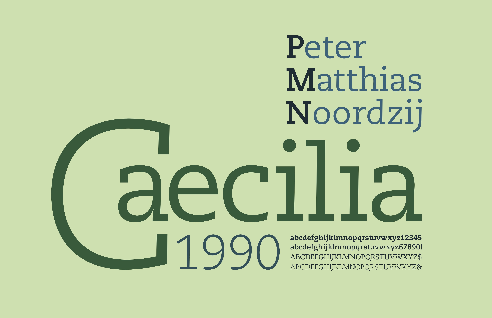

Vector Drawing 2017 | Adobe Illustrator
These are the original drawings of a costume design in two color schemes.
Typography Poster 2017| Adobe Illustrator
PMN Caecilia is a Slab Serif font, commonly used for book font. I moved “aecilia” so that the “a” fits inside the “C” to show the unique slabs of the letters.